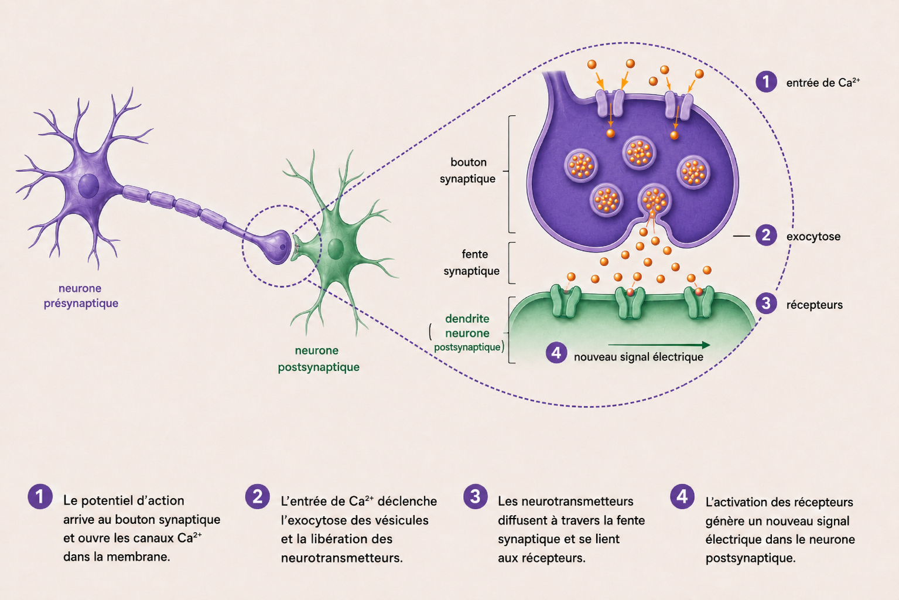

Aucun ne touche son voisin — et pourtant, ils se parlent.
Un neurone parle en électricité. Mais au bout de sa fibre, il y a un vide minuscule — la fente synaptique — et un courant électrique ne sait pas sauter un vide. Alors le neurone fait quelque chose de malin : il change de langue. Sa langue électrique (une onde de charge qui court dans le fil du neurone) ne peut pas traverser ; il la traduit donc en langue chimique (des petites molécules qu'on lâche de l'autre côté du vide), comme on glisserait un mot écrit par-dessus un fossé. En face, le mot est relu… en électricité. Électrique → chimique → électrique : c'est toute la communication entre deux neurones.

📁 pano_bio_communication_neurones.png à placer dans : /public/images/biologie/ Vue d'ensemble de la communication : neurone présynaptique avec potentiel d'action le long de l'axone, zoom synapse (entrée de Ca²⁺, vésicules qui fusionnent et libèrent les neurotransmetteurs par exocytose), fente synaptique, récepteurs du neurone post-synaptique.
La communication entre deux neurones — du potentiel d'action jusqu'aux récepteurs d'en face.
Prompt ChatGPT-image :
Modern educational biology illustration, clean medical-textbook style, single landscape canvas on a cream background (#FAF6F0). One central idea: how two neurons communicate — the journey of one message, left to right.
LAYOUT: 1) On the left, a presynaptic neuron in deep purple (#6B46C1) with a small arrow running along its axon labeled "potentiel d'action". 2) In the centre-right, an enlarged synapse: the presynaptic terminal with voltage-gated calcium channels open and orange Ca2+ ions entering, labeled "entrée de Ca2+"; inside, 4-5 synaptic vesicles (light-purple circles filled with small warm-orange dots = neurotransmitters); one vesicle fusing with the lower membrane and releasing its dots downward, labeled "exocytose". 3) A thin horizontal gap labeled "fente synaptique". 4) The postsynaptic membrane of the second neuron as a green strip (#2e9d5f) with 3 receptor shapes that OPEN ion channels when they catch the orange dots, labeled "récepteurs", and a small arrow labeled "nouveau signal électrique".
COLOR CODE (Medeos palette): presynaptic neuron deep purple (#6B46C1), Ca2+ and neurotransmitters warm orange (#E29C5C), vesicles light purple, postsynaptic membrane green (#2e9d5f), labels dark anthracite (#1F1F23).
Numbered legend 1 to 4 along the bottom, numbers in small purple circles. Labels in French, sans-serif font (Inter/Helvetica), ~14pt semi-bold. No overlapping labels. Style: scientific editorial illustration, thin clean lines, soft subtle shadows. Avoid: cartoon/anime, doodles, neon/glow, watermarks, emoji, clutter, cursive text, colored tubes. Aspect ratio: landscape, roughly 3:2.
Le message, en 4 temps
1Le potentiel d'action. Un signal électrique court le long de l'axone(le long fil qui sort du neurone). Ce signal, c'est une dépolarisation : des canaux(des portes dans la membrane) s'ouvrent, le sodium (Na⁺) entre d'un coup, et l'intérieur passe de négatif à positif.
2L'entrée de calcium. Le signal arrive à la terminaison(le bout de l'axone, juste contre l'autre neurone). La dépolarisation y ouvre des canaux à calcium (Ca²⁺), qui entre à son tour.
3L'exocytose. Le calcium agit comme un interrupteur : il pousse de petites bulles, les vésicules — pleines de neurotransmetteurs — à fusionner avec la membrane et à déverser leur contenu dans la fente. Pas de calcium → pas de fusion → rien n'est libéré.
4La traversée et la réception. Les neurotransmetteurs diffusent à travers le vide — ce sont des molécules, pas un courant — et se fixent sur les récepteurs(des serrures faites pour eux) du neurone d'en face. Cette fixation ouvre de nouveaux canaux : des ions bougent, et si le message est assez fort, un signal électrique repart dans ce neurone. Même idée qu'à l'étape 1 : la boucle recommence. Selon le neurotransmetteur, le message peut d'ailleurs activer le neurone d'en face… ou au contraire le calmer.
Le potentiel d'action, en trois temps : repos (intérieur négatif, environ −70 mV) → dépolarisation (le Na⁺ entre, ça devient positif) → retour au repos (le potassium K⁺ ressort). Et il fonctionne en tout-ou-rien : soit il part en entier, soit il ne se passe rien.
À retenirÉlectrique → chimique → électrique. L'exocytose est l'étape chimique qui fait franchir le vide. Le message va toujours dans un seul sens : du neurone qui libère (présynaptique) vers celui qui reçoit (post-synaptique).
Le piège
Ce n'est pas le courant qui traverse la fente, ce sont des molécules (les neurotransmetteurs). Et EXO = sortie : la cellule libère. Sans Ca²⁺, rien ne part.